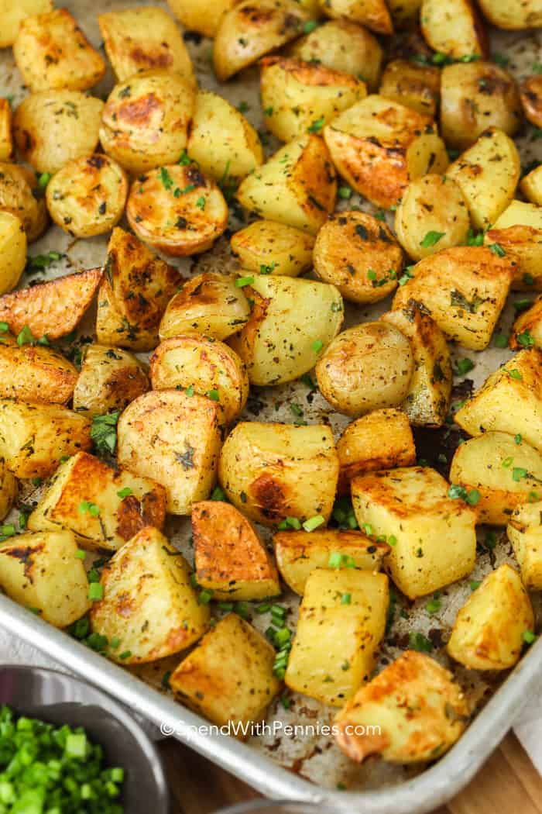

Roasted potatoes

Easy oven roasted potatoes
Crisp on the outside and fluffy on the inside, Roasted Potatoes are an easy side dish that goes with pretty much
any meal!
Add your favorite seasonings based on what's in your spice cupboard or what herbs are growing in your garden!
- Potatoes
- Olive oil
- Herbs of your liking
- Wash potatoes and cut into cubes.
- Soak in cold water about 15-20 minutes (optional).
- Preheat the oven to a very hot temperature.
The following cook times are for 5cm potatoe cubes:
- Bake at 350F for 45-50 minutes.
- Bake at 375F for 35-40 minutes.
- Bake at 400F for 30 minutes.
- Bake at 450F for 20-25 minutes.
- Add olive oil, seasonings, and herbs (per recipe below) and roast until tender.